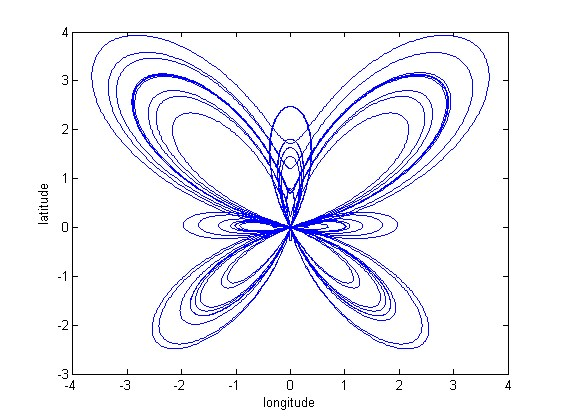
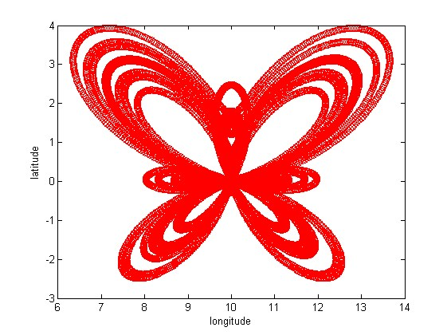
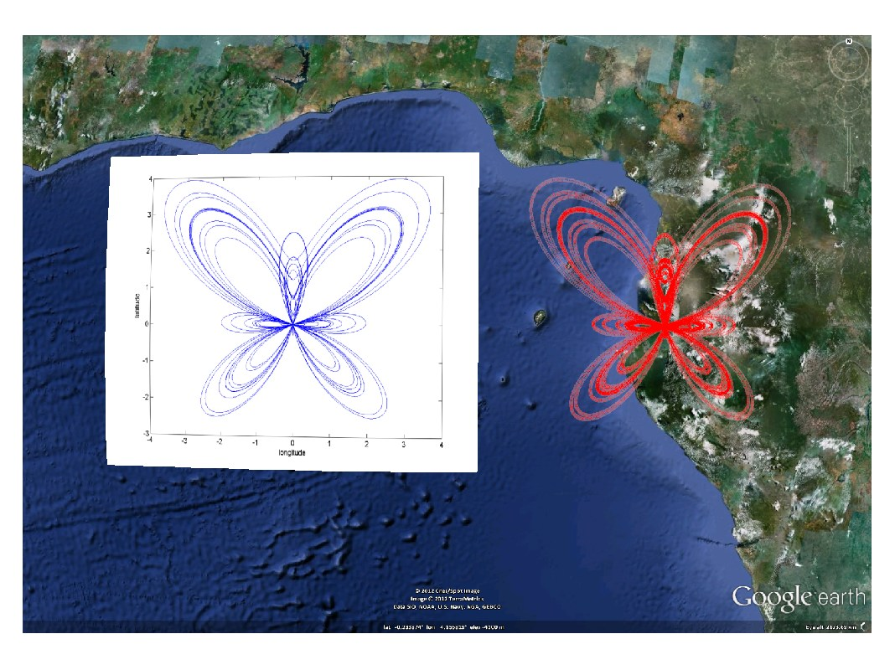

kml.transfer
Transfer one figure axes to kml file as an image overlay.
Contents
Syntax
kml.transfer(axisHandle) kml.transfer(...,'PropertyName',PropertyValue,...)
Description
kml.tranfer(axisHandle) will save the axis represented by the handle axisHandle as an image, and place this image as a ground overlay in the kml file, using the axis limits to position the overlay (x axis -> longitude / y axis -> latitude).
The axis units will normaly be treated as degrees, but this can be changed by calling: kml.useDegrees; or kml.useRadians; before transfering the axis.
To make the overlay transparent, change the alpha portion of the color parameter to a different hex value - eg.: 50% transparent, use kml.transfer(...,'color','80FFFFFF')
It is possible to fine tune the overlay properties using name-value pairs:
kml.transfer(...,'PropertyName',PropertyValue,...)
Properties
| Property Name | Type | Description |
|---|---|---|
| 'name' | string | Name of the overlay in the kml file |
| 'id' | string | Internal id of this overlay inside the kml |
| 'description' | string | A short description of what the overlay represents |
| 'visibility' | true/false | Control the initial visibility of the overlay |
| 'transparentBG' | true/false | Remove the background of the axis, in order to preserve only the plot. |
| 'keepAxis' | true/false | If set to true, keep the axes when saving the image. Otherwise, they are removed in the image |
| 'inPlace' | true/false | If set to true, the axes will not be cloned into a new figure before plotting. This can be useful if the plot to be transfered is too heavy, but be careful that plot will erased after calling kml.transfer |
| 'color' | kml color string | Defines the color of the overlay. Must be a valid hex color string input, in the style AABBGGRR |
| 'altitude' | double | Altitude where the overlay should be plotted. Input in meters. |
| 'altitudeMode' | string | Choose if the altitude value is absolute to the earth model, relative to the ground level, or should be clamped to the ground. Valid inputs: 'absolute', 'relativeToGround', 'clampToGround' |
| 'drawOrder' | double | In case more than one overlay is placed in the same location, this input defines the order on which they should be draw. |
| 'rotation' | double | Specifies a rotation of the overlay about its center. Values can be ±180° or ±pi, depending on the active unit. The default is 0 (north). Rotations are specified in a counterclockwise direction. |
| 'timeStamp' | kml date string | Associates the polygon to a moment in time. Should not be used together with timeSpan. Should be a string in the XML time format (more information available here) |
| 'timeSpanBegin' | kml date string | Defines the moment in time where the polygon starts to exist. Should not be used together with timeStamp. Should be a string in the XML time format (more information available here) |
| 'timeSpanEnd' | kml date string | Defines the moment in time where the polygon finishes to exist. Should not be used together with timeStamp. Should be a string in the XML time format (more information available here) |
Example
% Create a new kml object k = kml('my kml file'); fh = figure; ax = gca; %Plot the Butterfly curve, <en.wikipedia.org/wiki/Butterfly_curve_(transcendental)> t = linspace(0,20*pi,10000); display('This will transfer this plot in MATLAB, keeping the background and axes') ph = plot(ax,sin(t).*(exp(cos(t))-2*cos(4*t)-sin(t/12).^5) ,cos(t).*(exp(cos(t))-2*cos(4*t)-sin(t/12).^5)); xlabel('longitude'); ylabel('latitude'); snapnow; k.transfer(ax,'keepAxis',true,'transparentBG',false) display('and this one also, but without axes and a transparent background') set(ph,'Color','r','Marker','o','LineStyle','none') set(ph,'XData', get(ph,'XData')+10) snapnow; k.transfer(ax,'keepAxis',false,'transparentBG',true,'altitudeMode','absolute','altitude',10000) close(fh); % Save the kml and open it in Google Earth k.run;
This will transfer this plot in MATLAB, keeping the background and axes
and this one also, but without axes and a transparent background
This is the result of running this example:
This file is part of the kml toolbox. Copyright 2012 Rafael Fernandes de Oliveira (rafael@rafael.aero)